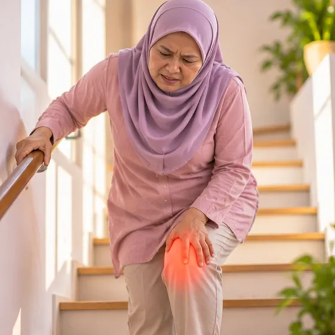

Penyakit Osgood-Schlatter
Benjolan yang sakit di bawah tempurung lutut pada kanak-kanak dan remaja yang sedang membesar
Apa itu
Pada kanak-kanak atau remaja yang sedang membesar, urat menarik tulang di bawah tempurung lutut. Ini boleh menyebabkan benjolan yang sakit dan bengkak, terutamanya selepas berlari atau melompat.
- Tepat di bawah tempurung lutut
- Remaja membesar, aktif sukan
- Sakit apabila berlari, melompat
- Jumpa doktor
- Doktor keluarga, doktor kanak-kanak, doktor ortopedik
- Biasa pada
- Kanak-kanak dan remaja yang aktif semasa pertumbuhan pesat
- Berjangkit
- Tidak
- Perjalanan
- Biasanya reda apabila pertumbuhan perlahan, tetapi boleh mengambil masa beberapa bulan
Tanda biasa

Sakit lutut di tanggaSakit lutut
Tanda-tanda lain
- Benjolan tulang yang mungkin menonjol di bawah lutut
- Sakit bertambah apabila berlari, melompat atau melutut
- Sakit berkurang apabila berehat
- Sedikit bengkak di sekitar tempat yang sakit
Mengapa ia berlaku

Kerja berat atau berulangPenggunaan berlebihan 
Sukan dan hentakanKecederaan sukan
Punca lain
- Pertumbuhan tulang yang pantas pada usia remaja
- Otot paha yang tegang
Jumpa doktor dahulu jika
- Anak tidak boleh meletakkan berat pada kaki, atau lutut kelihatan bengkok atau cacat: ke hospital
- Sakit selepas jatuh atau lutut terhantuk kuat
- Demam dengan lutut merah, panas dan sangat bengkak
- Sakit pada waktu malam atau ketika rehat, atau berjalan tempang yang semakin teruk
- Sakit yang tidak bertambah baik selepas beberapa minggu: jumpa doktor segera
Jika mana-mana berkenaan, sila jumpa doktor sebelum sesi.
Halaman ini ialah maklumat am. Sila terus mengambil ubat biasa anda dan terus berjumpa doktor.
Teruskan mengambil ubat biasa anda dan terus berjumpa doktor. Sesi kami ialah sokongan lembut dan tidak menggantikan rawatan perubatan.
Menjaga diri

Pakai kasut selesa dan menyokongKasut sokongan
Lebih banyak cara menjaga diri
- Kurangkan larian atau lompatan yang mencetuskan sakit
- Pilih aktiviti yang lebih ringan seperti berenang atau berbasikal jika tidak sakit
- Tanya doktor tentang regangan otot paha yang selamat
- Elakkan melutut terus pada tempat yang sakit
Beritahu ahli terapi anda
- Demam atau jangkitan aktif
- Kulit luka, merah atau sakit
- Perentak jantung atau implan logam
Ahli terapi anda akan menyemaknya bersama anda sebelum bermula.
Keadaan berkaitan
Rujukan: General information based on public health sources such as Mayo Clinic, NHS, Cleveland Clinic and NCBI StatPearls.
Halaman dikemas kini: 2026-10-31